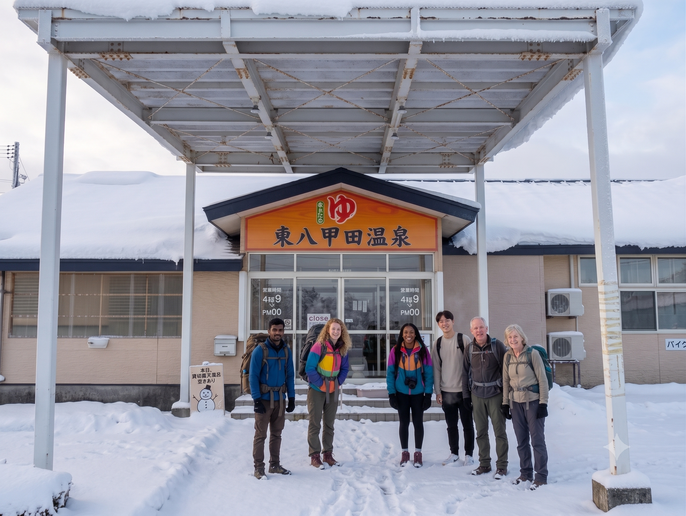

キッズゲレンデとスノーエスカレーター
一般ゲレンデとは独立した無料キッズゲレンデ、ローディングカーペット付きリフト、スノーエスカレーター——リフトに乗れない子どもでも安全に雪遊びデビュー。親子セット日中券¥6,000（公式2025-26）なら家族一日が組みやすい。
アクセスを見るマロースの魅力
一般ゲレンデとは独立した無料キッズゲレンデ、ローディングカーペット付きリフト、スノーエスカレーター——リフトに乗れない子どもでも安全に雪遊びデビュー。親子セット日中券¥6,000（公式2025-26）なら家族一日が組みやすい。
アクセスを見る16:00からのナイター券は大人¥1,800・こども¥1,100（公式2025-26）。旭川市街の夜景を一望しながら滑れる——W杯開催実績のパウダー斜面を、仕事帰りや宿泊前の夜遊びに。
温泉・リカバリーを見る付近の温泉
ゲレンデから車で30〜60分圏に、旭川結心の湯や天人峡温泉、層雲峡温泉郷——ナイター後の体を温める定番ルートが揃います。
旭川市内宿泊なら、昼は動物園・夕方はゲレンデ・夜は温泉という三段コンボが鉄板です。
旭川周辺の温泉ガイド
Access
JR旭川駅から車で約15〜20分 · 旭川空港から約30分 · 営業 9:00〜21:00（ナイター 16:00〜）
TEL 0166-36-4911